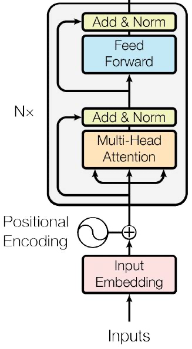
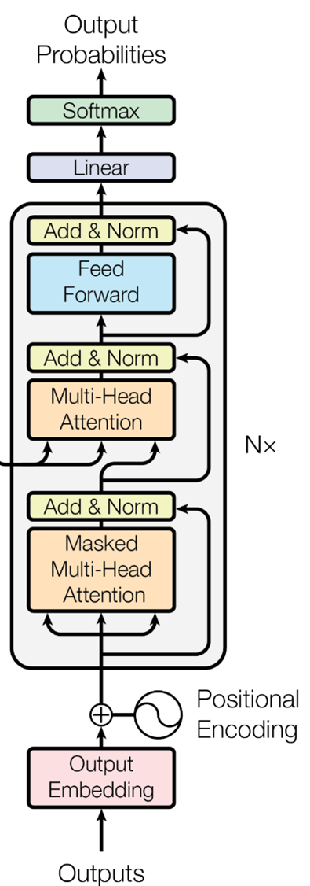
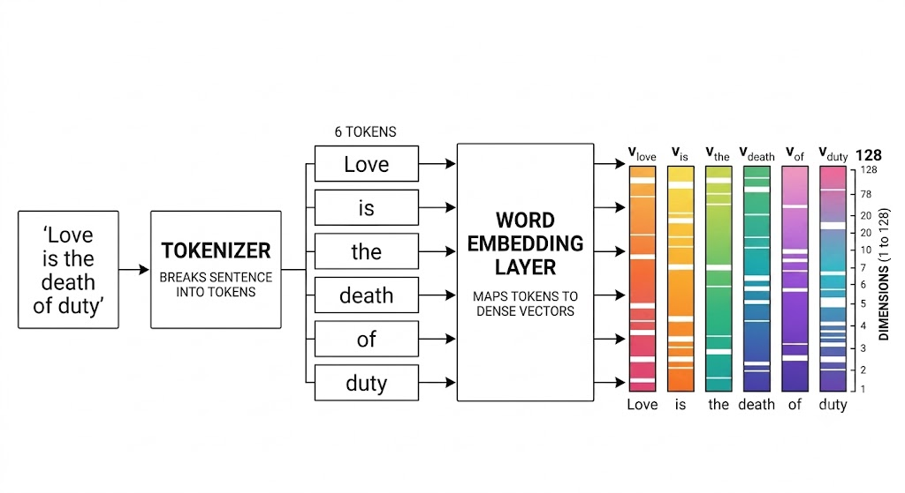
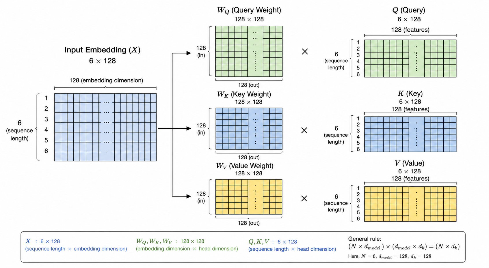

A deep-dive into how the Transformer processes data — from raw text to attention weights — based on the "Attention Is All You Need" paper by Google.
Before we start the Transformer architecture, let's build an intuition about how data is processed in short.
Think of a Transformer as a device: it takes some input, takes a while to work on it (the training phase), and after that it understands the meaning of words. The output may be generated at any phase of the model — even if it is not trained it generates output, but with no meaning and random letters.
Look at the picture from the "Attention Is All You Need" paper released by Google which changed the industry.
At a basic level, the Transformer is divided into two major components:


Before we interact with any model, it first needs training — i.e., allowing the model to learn information, say meaning of a sentence. So where does this learning happen?
The answer is: inside the Encoder.
Now let's take a look into the Encoder. It has:
We will get to know about all of these in a while. For now let's continue by jumping back to the training process.
If any reader is reading this article right after finishing Diffusion Models and CNN — don't revise your great knowledge, go with me in the flow. CNN is completely different from Transformer.
Let's assume we took data from a text file. The data is converted into a number — mostly a floating-point number, usually stored as a tensor datatype.
Of course we cannot represent the whole process, so let's take the famous dialogue:
"Love is the death of duty."
This sentence will be tokenized by passing through a tokenizer. Consider the vocabulary size is 128 (number of words in data = 128).

Now these 6 × 128 dimensional vectors will get into the Encoder block.
You can see in the Encoder diagram that the initial part contains a Positional Encoder. Let's talk about it in detail.
We add a positional encoder because Transformers do not understand word order by default. So we add some additional information to each word to remember the positions. For example:
"I love you" vs. "You love I"
Both sentences contain the same words, but their meanings are different. Self-attention alone cannot distinguish this.
The positionally encoded tokens are passed to the Multi-Head Attention block with Key, Query, and Value. Don't overthink these terms.
When I say "pass key, query, value" — these are all the same words (same embedding vectors of "love", "is", …, "duty") that we pass to the Transformer encoder. But think of why?
That's the main role of self-attention: the Key and Query multiply each other (those 6 same vectors multiply each other) to produce attention scores. These attention scores (w1, w2, w3, …, w6) are computed using the dot product:
These attention scores show how much attention a word pays to another word. After multiplying using the dot product method, we apply normalization on the attention scores and call them attention weights:
After positional embedding, the input embedding matrix (6 × 128) is multiplied with weight matrices WQ, WK, WV of (128 × 128) dimension. These weights are initialized randomly at start.
The input embedding is multiplied with the Q, K, V weights, generating Q, K, V vectors:

Now you see we have 3 matrices — Q, K, V — which are eventually data that were transformed. The input embeddings are transformed into Q, K, V. As explained earlier, these 3 are similar data which were transformed from the same input embedding vector.
More importantly, from an outside point of view: the model trains those Q, K, V weight vectors — this is exactly what the LLM is. Even when we ship the model, we save the model weights irrespective of the input data.
The torch.state_dict() function in the torch library: whenever you
train a model, we save the model weights in our device and ship the
.pth file, where we then reuse those weights to predict.
This makes a good intuition about large language model training: we ultimately train the model weights by initializing them with random values, then we train them frequently on our data. When it reaches a certain accuracy, we stop the training.
Remember the attention scores explained earlier in self-attention? The same concept applies here too. This attention mechanism is similar across any model, but the handling of data might be different (Bahdanau attention, causal attention, self-attention, etc.).
In MHA, the attention scores are computed by multiplying Q and K values:
Then the attention scores are divided by √dk, which is the square root of the dimension of K. Logically Q and K also have the same dimension so we can use either, but in the original "Attention Is All You Need" paper they used dk with a square root: